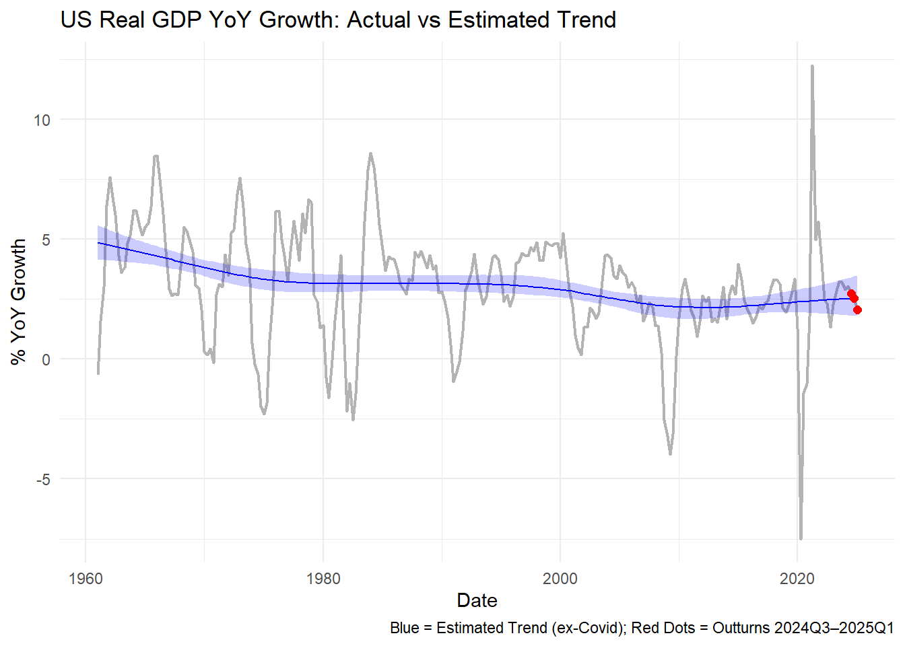

Code
knitr::opts_chunk$set(echo = TRUE)This report presents an analysis of GDP using R. The following code was extracted from the original R script and prepared for web rendering via Quarto.
knitr::opts_chunk$set(echo = TRUE)library(fredr)
library(tidyverse)
library(brms)
library(lubridate)
library(tidybayes)
# setwd(dirname(rstudioapi::getActiveDocumentContext()$path)) # Commented out for Quarto rendering
# getwd() # Commented out
# rm(list=ls()) # Commented out
# #' ### API Key Retrieval
# #' The FRED API key is retrieved from an environment variable for security.
api_key <- Sys.getenv("MY_API_KEY")
if (api_key =="") {
stop("API key 'MY_API_KEY' not found. Please set it as an environment variable in .Renviron.")
}
fredr_set_key(api_key)
# # Data Import and Preparation
# #' We import historical Real Gross Domestic Product (GDPC1) data from the
# #' Federal Reserve Economic Data (FRED) database. The data is then transformed
# #' to year-over-year (YoY) growth rates. A dummy variable for the COVID-19
# #' period (2020-2021) is also created for later exclusion in the trend model.
gdp_raw <- fredr(series_id = "GDPC1", observation_start = as.Date("1960-01-01")) %>%
select(date, value) %>%
mutate(
yoy = (value / lag(value, 4) - 1) * 100,
quarter = year(date) + (quarter(date) - 1) / 4,
covid = if_else(date >= as.Date("2020-01-01") & date <= as.Date("2021-12-31"), 1, 0)
) %>%
filter(!is.na(yoy))
# #' Here's a glimpse of the prepared data:
gdp_raw %>% head() %>% knitr::kable(caption = "First Few Rows of Prepared GDP Data")| date | value | yoy | quarter | covid |
|---|---|---|---|---|
| 1961-01-01 | 3493.703 | -0.6675232 | 1961.00 | 0 |
| 1961-04-01 | 3553.021 | 1.5657847 | 1961.25 | 0 |
| 1961-07-01 | 3621.252 | 3.0115336 | 1961.50 | 0 |
| 1961-10-01 | 3692.289 | 6.3974990 | 1961.75 | 0 |
| 1962-01-01 | 3758.147 | 7.5691609 | 1962.00 | 0 |
| 1962-04-01 | 3792.149 | 6.7302726 | 1962.25 | 0 |
# # Fit a Smooth Trend Model (ex-Covid)
# #' A Bayesian smooth trend model is fitted to the year-over-year GDP growth.
# #' The model uses a thin plate regression spline (`s(quarter)`) to capture the
# #' non-linear trend. The data from the COVID-19 period is excluded from the
# #' model fitting to estimate an underlying trend, given the unusual economic
# #' disruptions during that time.
train_data <- gdp_raw %>% filter(date <= as.Date("2024-06-30"))
trend_model <- brm(
formula = bf(yoy ~ s(quarter)),
data = train_data %>% filter(covid == 0),
family = gaussian(),
chains = 4, iter = 4000, cores = 4,
control = list(adapt_delta = 0.95),
seed = 1234
)
# # Predict with Posterior Draws
# #' Posterior draws from the fitted trend model are used to generate predictions
# #' across the entire dataset, including the latest outturns. This allows for
# #' a robust estimate of the underlying trend and its uncertainty.
# Define test set
test_data <- gdp_raw %>% filter(date > as.Date("2024-06-30"))
# Combine for prediction
pred_data <- bind_rows(train_data, test_data) %>%
select(date, quarter, yoy, covid)
pred_draws <- add_epred_draws(object = trend_model, newdata = pred_data, ndraws = 1000)
# # Plot Actual vs Estimated Trend
# #' The plot below visualizes the actual year-over-year GDP growth alongside
# #' the estimated smooth trend and its 80% credible interval. Recent outturns
# #' (from 2024Q3 onwards) are highlighted in red.
pred_summary <- pred_draws %>%
group_by(date) %>%
median_qi(.epred, .width = 0.8) %>%
left_join(pred_data, by = "date")
#| label: gdp-trend-plot
#| fig-cap: "US Real GDP YoY Growth: Actual vs Estimated Trend"
#| echo: false
#| message: false
#| warning: false
ggplot(pred_summary, aes(x = date)) +
geom_line(aes(y = yoy), color = "gray70", linewidth = 0.8) +
geom_line(aes(y = .epred), color = "blue") +
geom_ribbon(aes(ymin = .lower, ymax = .upper), fill = "blue", alpha = 0.2) +
geom_point(data = filter(pred_summary, date > as.Date("2024-06-30")),
aes(y = yoy), color = "red", size = 2) +
labs(title = "US Real GDP YoY Growth: Actual vs Estimated Trend",
y = "% YoY Growth", x = "Date",
caption = "Blue = Estimated Trend (ex-Covid); Red Dots = Outturns 2024Q3–2025Q1") +
theme_minimal()
# # Probability of Outturn ≠ Trend
# #' To quantify whether recent outturns significantly deviate from the estimated
# #' trend, we calculate the posterior probability that the actual outturn
# #' differs from the trend by more than a certain threshold (e.g., 1.28 standard
# #' deviations of the trend's posterior distribution, which corresponds to roughly
# #' an 80% interval). This provides a "signal" indicator for deviations.
signal_prob <- pred_draws %>%
filter(date > as.Date("2024-06-30")) %>%
left_join(test_data %>% select(date, actual = yoy), by = "date") %>%
group_by(date) %>%
summarise(prob_diff = mean(abs(.epred - actual) > sd(.epred) * 1.28)) # <--- CHANGED TO .epred
# #' The probabilities of significant deviation for recent outturns are:
signal_prob %>% knitr::kable(caption = "Probability of Significant Deviation from Trend")| date | prob_diff |
|---|---|
| 2024-07-01 | 0.208 |
| 2024-10-01 | 0.200 |
| 2025-01-01 | 0.334 |
# # Optional Add-on for Diagnostics
# #' These lines are commented out but can be uncommented for model diagnostics.
# #' They provide summary statistics and diagnostic plots for the `brms` model.
# #'
# #' - `summary(trend_model)`: Provides parameter estimates, MCMC diagnostics, etc.
# #' - `plot(trend_model)`: Shows trace plots and posterior distributions.
# #' - `pp_check(trend_model)`: Compares posterior predictive distributions to observed data.
# summary(trend_model)
# plot(trend_model)
# pp_check(trend_model)Summarise the key insights or interpretations from the analysis here.